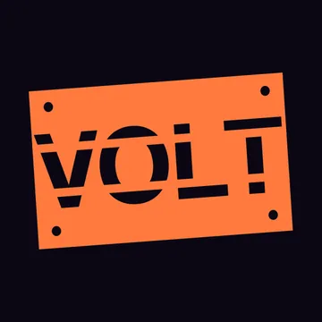
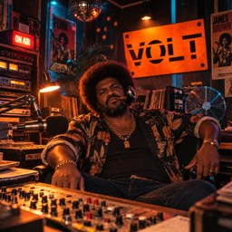

VOLT
107.3 FM
SOFT JAZZ · SOUL · CLASSIQUES AMÉRICAINS
Le groove n'attend pas. Big Lou non plus.
▶ Écouter VOLT en directÀ l'antenne

Big Lou
Quarante ans de clubs, voix rauque, perpétuellement énervé. Il insulte les morceaux, jamais les gens, et menace toujours d'en passer un pire.
Quarante ans de clubs, voix rauque, perpétuellement énervé. Il insulte les morceaux, jamais les gens, et menace toujours d'en passer un pire.
Jingles
« Cent-sept trois, VOLT. Lumière basse, verre posé, on ne parle pas fort ici. »
« VOLT, cent-sept trois. Le club est ouvert, la porte est lourde, le son est doux. »
« Ici Big Lou, VOLT cent-sept trois. Du jazz, de la soul, et un saxo qui traîne jusqu'à minuit. »
Au programme (19 morceaux)
- Into the J · Admiral Bob
- Light Me On Fire · Admiral Bob
- Walden Pond Blues · Admiral Bob
- bluenotes · airtone
- Age Of AI · Aussens@iter
- Guitar & Saxophone (Instrumental) · Aussens@iter
- Cool Blue (Instrumental) · CASchubert
- PeaceLoveSoul · Jeris
- Get Out to Vote · Kara Square
- OctoBlues · Kevin MacLeod
- Ophelia (dogmix) · oldDog
- On Hold for You · Kevin MacLeod
- Falling · Siobhan Dakay
- Klaus · Skill_Borrower
- Probably Shouldn T · Stefan Kartenberg
- Study And Relax · Kevin MacLeod
- Motherless Child · The Spirit Of Light
- On the 131 Jazz/Rock Mix · unreal_dm
- Too Late Blues Rock Mix · unreal_dm